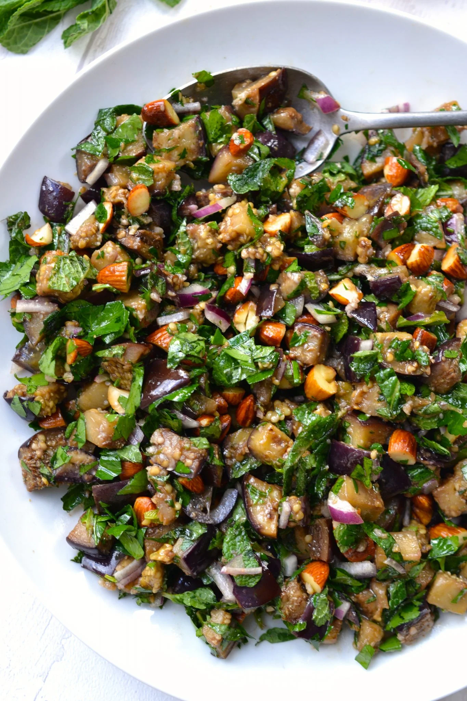
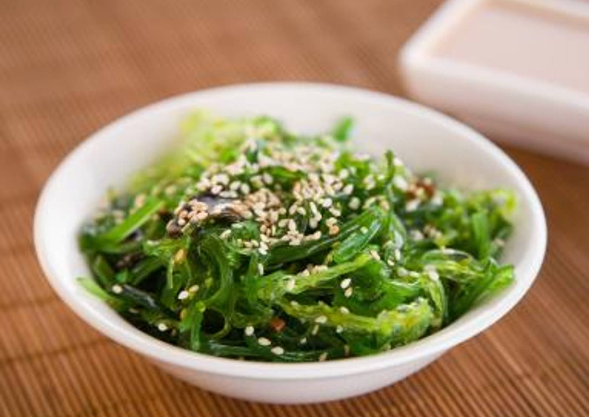
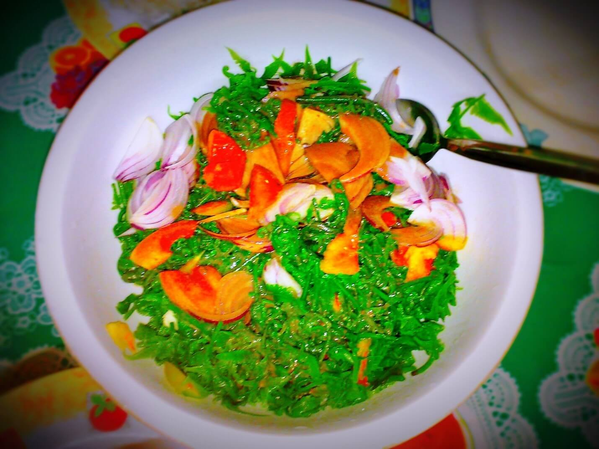
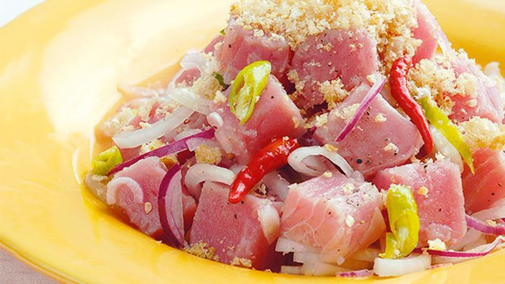
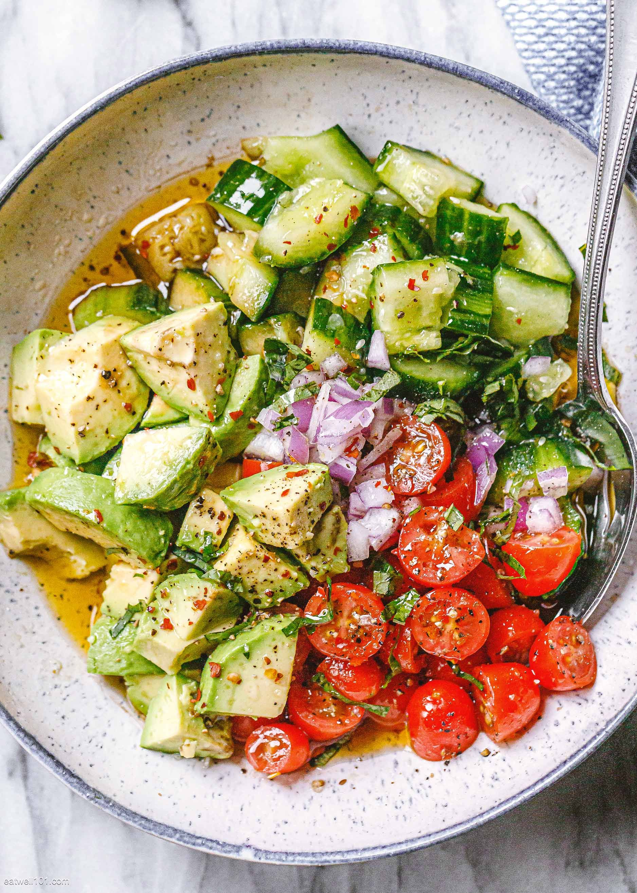
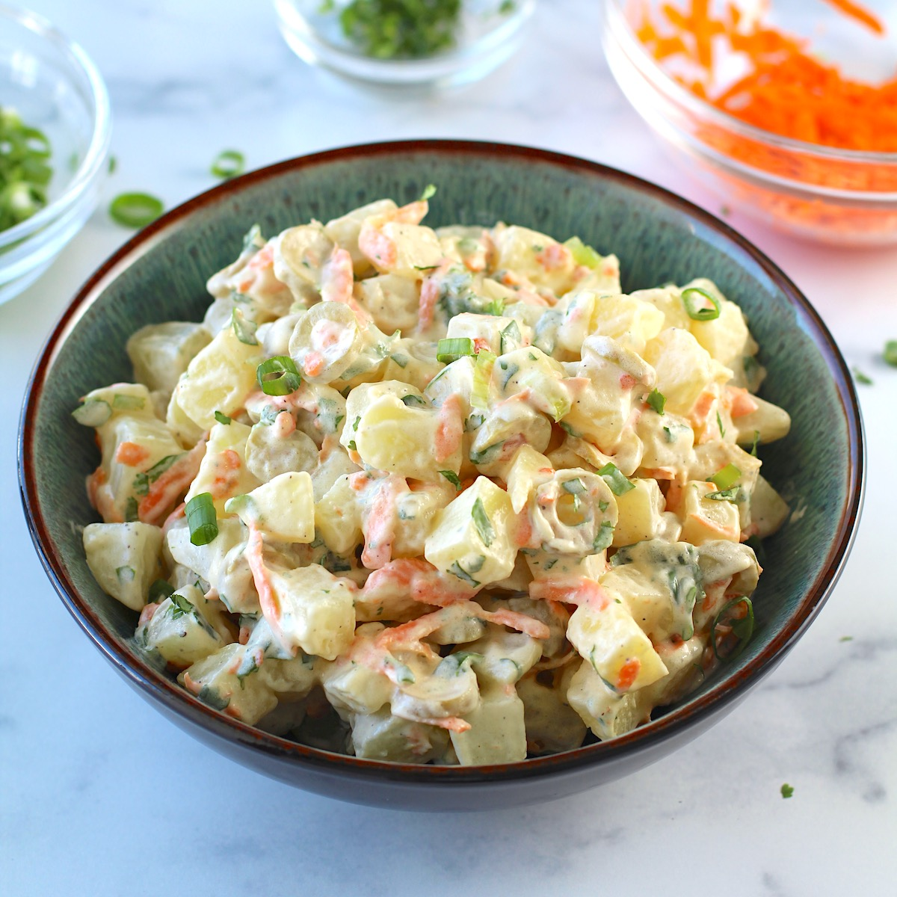
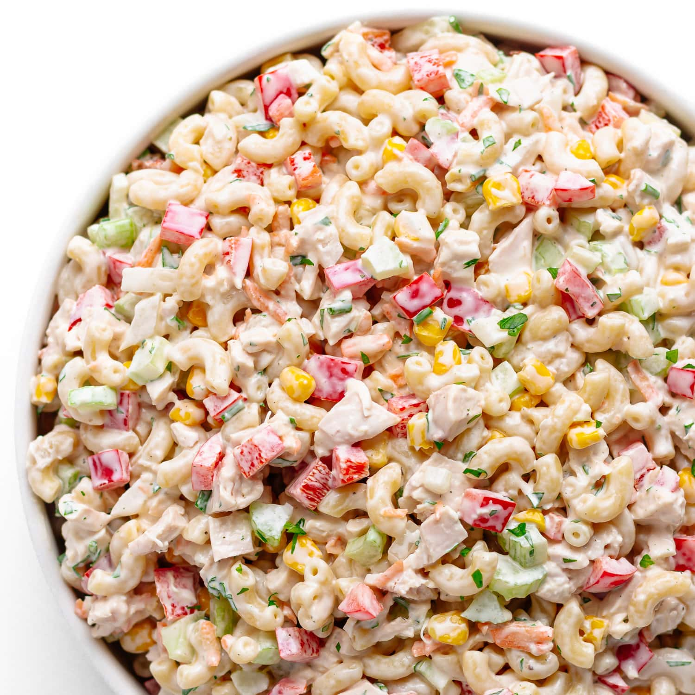

Eggplant Salad

Ingredients
- 2 large eggplants (grilled or roasted)
- 2 tomatoes (diced)
- 1 onion (chopped)
- 1 salted egg (optional, sliced)
- 2 tbsp vinegar or calamansi juice
- Salt and pepper to taste
Instructions
- Grill or roast the eggplants until the skin is charred. Peel off the skin and mash the flesh.
- Combine mashed eggplant with tomatoes, onions, and salted egg (if using).
- Drizzle with vinegar or calamansi juice, season with salt and pepper, and mix well.
- Serve chilled or at room temperature.
Seaweed Salad

Ingredients
- 1 cup lato (sea grapes) or gulaman (agar-agar)
- 2 tomatoes (diced)
- 1 onion (chopped)
- 2 tbsp vinegar or calamansi juice
- Salt and pepper to taste
Instructions
- Rinse the seaweed (lato or gulaman) thoroughly in cold water and drain.
- Mix the seaweed with diced tomatoes and chopped onions in a bowl.
- Drizzle with vinegar or calamansi juice, season with salt and pepper, and toss well.
- Serve fresh and chilled.
Fern Salad

Ingredients
- 2 cups pako (fiddlehead fern, cleaned)
- 2 tomatoes (diced)
- 1 onion (chopped)
- 2 salted eggs (optional, sliced)
- 2 tbsp vinegar or calamansi juice
- Salt and pepper to taste
Instructions
- Rinse and drain the pako thoroughly.
- In a bowl, combine pako, tomatoes, onions, and salted eggs (if using).
- Drizzle with vinegar or calamansi juice, season with salt and pepper.
- Toss gently and serve fresh.
Kilawin/Kinilaw

Ingredients
- 500g fresh tuna or tanigue (cubed)
- ½ cup vinegar or calamansi juice
- 1 onion (chopped)
- 1 thumb-sized ginger (minced)
- 2-3 chilies (chopped)
- Salt and pepper to taste
Instructions
- Marinate the fish in vinegar or calamansi juice for 10-15 minutes, then drain excess liquid.
- Add onions, ginger, and chilies to the fish.
- Season with salt and pepper, mix well, and serve fresh.
Cucumber Salad

Ingredients
- 2 cucumbers (thinly sliced)
- 1 tomato (diced)
- 1 onion (chopped)
- 2 tbsp vinegar or calamansi juice
- 1 tsp sugar (optional)
- Salt and pepper to taste
Instructions
- Combine cucumbers, tomatoes, and onions in a bowl.
- Drizzle with vinegar or calamansi juice, add sugar (if using), and season with salt and pepper.
- Toss well and serve chilled.
Potato Salad

Ingredients
- 4 medium potatoes (boiled and diced)
- 2 hard-boiled eggs (chopped)
- 1 carrot (diced and boiled)
- ½ cup mayonnaise
- ¼ cup pickles or relish
- Salt and pepper to taste
Instructions
- Mix boiled potatoes, eggs, and carrots in a bowl.
- Add mayonnaise and pickles or relish.
- Season with salt and pepper, toss well, and serve chilled.
Chicken Macaroni Salad

Ingredients
- 2 cups elbow macaroni (cooked)
- 1 cup shredded chicken (boiled or roasted)
- ¼ cup pineapple tidbits (drained)
- ½ cup mayonnaise
- 1 carrot (diced)
- ¼ cup raisins (optional)
- Salt and pepper to taste
Instructions
- In a large bowl, combine cooked macaroni, shredded chicken, carrots, pineapple tidbits, and raisins (if using).
- Add mayonnaise and mix well.
- Season with salt and pepper, then toss until evenly coated.
- Serve chilled.